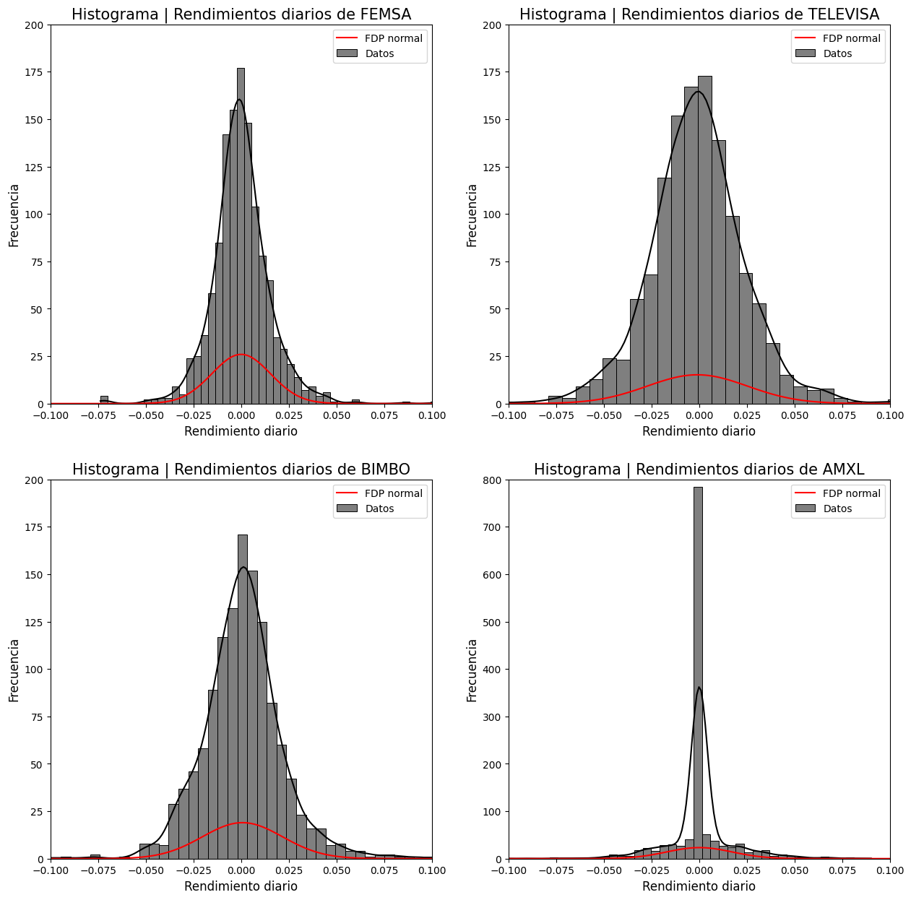
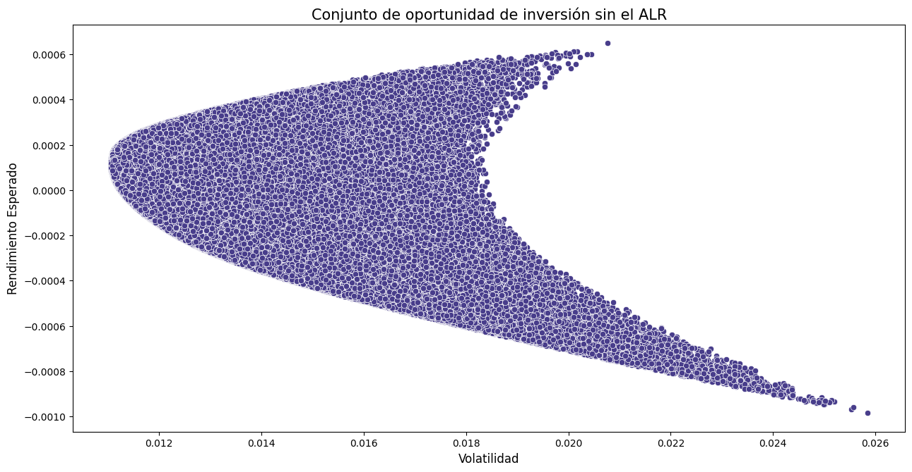
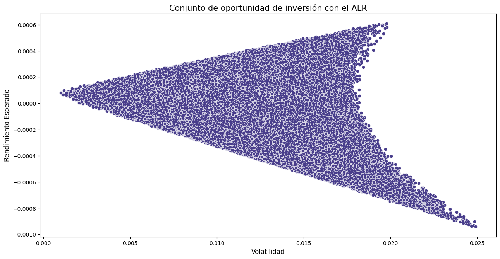
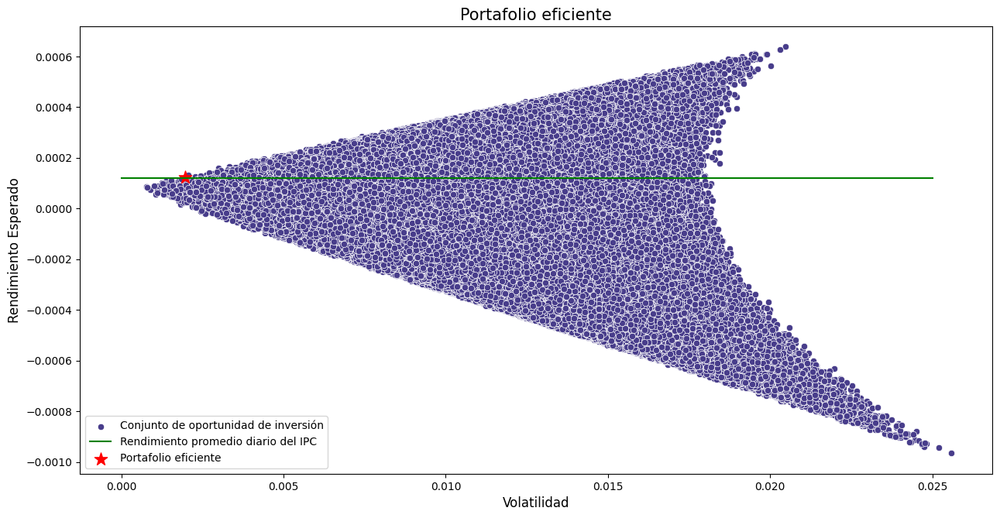
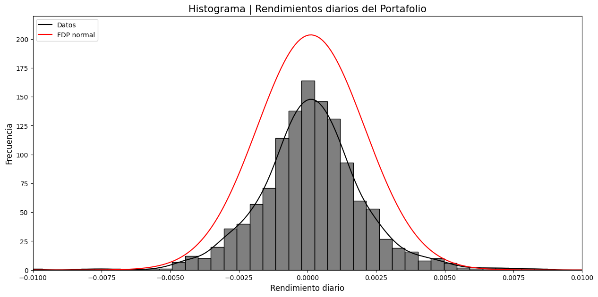
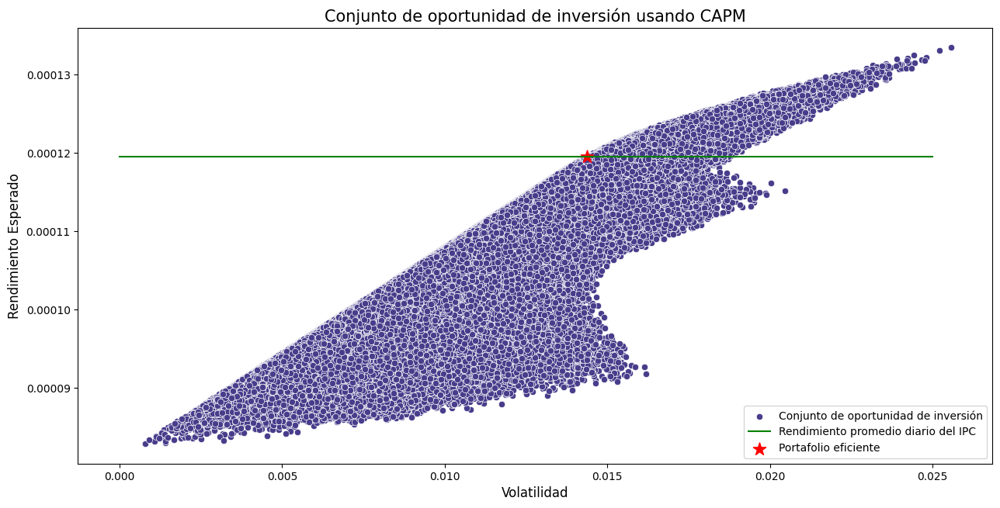

import numpy as np
import pandas as pd
import seaborn as sns
# import statistics as st
from scipy.stats import norm
import yfinance as yf
import matplotlib.pyplot as pltPropuesta de inversión
1 Precios de cierre históricos del 1 de mayo de 2018 al 30 de abril de 2023
P = ["FEMSAUBD.MX", "TLEVISACPO.MX", "BIMBOA.MX", "AMXB.MX", "^MXX"] #Parece que ya no es AMXL.MX, sino AMXB.MX
colors = ["tab:orange","tab:blueviolet","tab:blue", "tab:crimson"]
start = "2018-05-01"
end = "2023-04-30"Port = yf.download(P, start = start, end = end)['Close'].reset_index()
Port.head(5)[*********************100%***********************] 5 of 5 completed| Date | AMXB.MX | BIMBOA.MX | FEMSAUBD.MX | TLEVISACPO.MX | ^MXX | |
|---|---|---|---|---|---|---|
| 0 | 2018-05-02 | 17.900000 | 42.459999 | 174.320007 | 67.209999 | 47809.980469 |
| 1 | 2018-05-03 | 17.200001 | 41.139999 | 171.759995 | 65.949997 | 47094.128906 |
| 2 | 2018-05-04 | 17.030001 | 41.189999 | 174.399994 | 67.320000 | 46992.171875 |
| 3 | 2018-05-07 | 17.030001 | 40.660000 | 172.820007 | 68.480003 | 46474.699219 |
| 4 | 2018-05-08 | 17.450001 | 40.840000 | 172.000000 | 70.050003 | 46719.511719 |
acciones = ["AMXL", "BIMBO", "FEMSA", "TELEVISA"]
Port.columns = ["Fecha"] + acciones + ["IPC"]
Port.columnsIndex(['Fecha', 'AMXL', 'BIMBO', 'FEMSA', 'TELEVISA', 'IPC'], dtype='object')Port['Fecha'] = pd.to_datetime(Port['Fecha'],dayfirst=True)Ya una vez descargados los precios de cierre histórico, calculemos el rendimiento promedio diario y la volatilidad de los rendimientos diarios.
# Con un loop hay menos riesgo de equivocarnos. Si nos equivocamos, solo tenemos
# que corregir una línea de código en vez de 4.
for accion in acciones+["IPC"]:
Port[accion+"_r"] = np.log(Port[accion] / Port[accion].shift(1))Port.dropna(inplace = True)
Port.reset_index(drop = True, inplace = True)
Port.head(5)| Fecha | AMXL | BIMBO | FEMSA | TELEVISA | IPC | AMXL_r | BIMBO_r | FEMSA_r | TELEVISA_r | IPC_r | |
|---|---|---|---|---|---|---|---|---|---|---|---|
| 0 | 2018-05-03 | 17.200001 | 41.139999 | 171.759995 | 65.949997 | 47094.128906 | -0.039891 | -0.031582 | -0.014795 | -0.018925 | -0.015086 |
| 1 | 2018-05-04 | 17.030001 | 41.189999 | 174.399994 | 67.320000 | 46992.171875 | -0.009933 | 0.001215 | 0.015253 | 0.020561 | -0.002167 |
| 2 | 2018-05-07 | 17.030001 | 40.660000 | 172.820007 | 68.480003 | 46474.699219 | 0.000000 | -0.012951 | -0.009101 | 0.017084 | -0.011073 |
| 3 | 2018-05-08 | 17.450001 | 40.840000 | 172.000000 | 70.050003 | 46719.511719 | 0.024363 | 0.004417 | -0.004756 | 0.022668 | 0.005254 |
| 4 | 2018-05-09 | 17.450001 | 39.590000 | 169.059998 | 72.209999 | 46294.429688 | 0.000000 | -0.031085 | -0.017241 | 0.030369 | -0.009140 |
2 Rendimientos promedio diario y volatilidad de los rendimientos diarios.
rend_promedio = {} #Diccionario.
for accion in acciones+["IPC"]:
rend_promedio[accion] = np.mean(Port[accion+"_r"])for accion in acciones:
print("El rendimiento promedio diario de la acción " + accion + " es: " +
str(np.round(100*rend_promedio[accion], 4)) + "%")
print("El rendimiento promedio diario del IPC es: " +
str(np.round(100*rend_promedio["IPC"], 4)) + "%")El rendimiento promedio diario de la acción AMXL es: 0.0068%
El rendimiento promedio diario de la acción BIMBO es: 0.0661%
El rendimiento promedio diario de la acción FEMSA es: -0.0009%
El rendimiento promedio diario de la acción TELEVISA es: -0.1008%
El rendimiento promedio diario del IPC es: 0.0119%volatilidad = {}
for accion in acciones+["IPC"]:
volatilidad[accion] = np.std(Port[accion+"_r"])for accion in acciones:
print("La volatilidad de los rendimientos diarios de la acción " + accion +
" es: " + str(np.round(100*volatilidad[accion], 4)) + "%")
print("La volatilidad de los rendimientos diarios del IPC es: " +
str(np.round(100*volatilidad["IPC"], 4)) + "%")La volatilidad de los rendimientos diarios de la acción AMXL es: 1.7126%
La volatilidad de los rendimientos diarios de la acción BIMBO es: 2.1015%
La volatilidad de los rendimientos diarios de la acción FEMSA es: 1.5359%
La volatilidad de los rendimientos diarios de la acción TELEVISA es: 2.6285%
La volatilidad de los rendimientos diarios del IPC es: 1.1116%3 Tasa libre de riesgo
3. Hay que considerar que existe una tasa libre de riesgo promedio anual de 3% durante este periodo.
Primero la convertimos a una tasa efectiva diaria:
\[(1+3\%)^{\frac{1}{365}} - 1 = .000080986299 = 0.0080986299\% \]
# Rendimiento diario del activo libre de riesgo
ALR_r = (1 + 0.03)**(1/365) - 1
ALR_r8.098629905317623e-054 Presentación de las empresas en las que se invertirá
4.1 VaR y cVaR para cada activo
4.1.1 Monte Carlo
simulaciones = {}
VaR_MC_90 = {}
VaR_MC_95 = {}
VaR_MC_99 = {}
cVaR_MC_90 = {}
cVaR_MC_95 = {}
cVaR_MC_99 = {}
np.random.seed(123)
for accion in acciones:
simulaciones[accion] = pd.DataFrame() # Guardamos un DataFrame vacío por acción en el diccionario
simulaciones[accion]['Sim_Z'] = np.random.standard_normal(size = 1000000)
S0 = Port[accion].iloc[-1]
mu = rend_promedio[accion]
sigma = volatilidad[accion]
# 1,000,000 de simulaciones del precio de la acción a un horizonte de 1 día
simulaciones[accion]['Sim_S1'] = simulaciones[accion]['Sim_Z'].map(lambda x : S0*np.exp((mu-(sigma**2)/2) + sigma*x))
# 1,000,000 de simulaciones del rendimiento de la acción a un horizonte de 1 día
simulaciones[accion]['P&L'] = simulaciones[accion]['Sim_S1'].map(lambda x : np.log(x / S0))
# Multiplicamos por 1,000,000
VaR_MC_90[accion] = - 1000000 * np.percentile(simulaciones[accion]['P&L'], 10)
VaR_MC_95[accion] = - 1000000 * np.percentile(simulaciones[accion]['P&L'], 5)
VaR_MC_99[accion] = - 1000000 * np.percentile(simulaciones[accion]['P&L'], 1)
# Para calcular el cVaR calculamos el promedio de las pérdidas que superan a VaR/1000000 y este valor
# se multiplica por 1000000
cVaR_MC_90[accion] = - 1000000 * np.mean(simulaciones[accion][simulaciones[accion]['P&L'] <
- VaR_MC_90[accion]/1000000]['P&L'])
cVaR_MC_95[accion] = - 1000000 * np.mean(simulaciones[accion][simulaciones[accion]['P&L'] <
- VaR_MC_95[accion]/1000000]['P&L'])
cVaR_MC_99[accion] = - 1000000 * np.mean(simulaciones[accion][simulaciones[accion]['P&L'] <
- VaR_MC_99[accion]/1000000]['P&L'])MC_resumen = pd.DataFrame([VaR_MC_90, cVaR_MC_90, VaR_MC_95, cVaR_MC_95, VaR_MC_99, cVaR_MC_99],
index = ['VaR_90', 'cVaR_90', 'VaR_95', 'cVaR_95', 'VaR_99', 'cVaR_99'])
MC_resumen.round(2)| AMXL | BIMBO | FEMSA | TELEVISA | |
|---|---|---|---|---|
| VaR_90 | 22014.21 | 26527.86 | 19808.59 | 35007.63 |
| cVaR_90 | 30131.56 | 36486.59 | 27055.77 | 47462.13 |
| VaR_95 | 28258.98 | 34202.71 | 25381.19 | 44532.24 |
| cVaR_95 | 35397.34 | 42942.39 | 31762.15 | 55566.93 |
| VaR_99 | 39937.37 | 48448.70 | 35739.94 | 62605.26 |
| cVaR_99 | 45672.58 | 55558.93 | 40948.17 | 71571.07 |
4.1.2 Paramétrico Normal
Recordando que \(\alpha = 1 - c\) \[VaR = P_t \left(\varPhi^{-1}(c)\sigma_{t,h}-\mu_{t,h}\right)\]
\[cVaR = P_t \left( \alpha^{-1} \varphi \left( \varPhi^{-1}(\alpha) \right) \sigma_{t,h} - \mu_{t,h} \right)\]
alpha = [0.1, 0.05, 0.01]
pt = 1000000
VaR_PN = {}
cVaR_PN = {}
for a in alpha:
phi_inversa_c = norm.ppf(1-a)
phi_inversa_alpha = norm.ppf(a)
pdf_phi_inversa_alpha = norm.pdf(phi_inversa_alpha)
# Por cada valor de alpha creamos un diccionario
# Diccionario de diccionarios
VaR_PN[a] = {}
cVaR_PN[a] = {}
for accion in acciones:
mu = rend_promedio[accion]
sigma = volatilidad[accion]
VaR_PN[a][accion] = pt * (sigma * phi_inversa_c - mu)
cVaR_PN[a][accion] = pt * (sigma * pdf_phi_inversa_alpha / a - mu)PN_resumen = pd.DataFrame([VaR_PN[0.1], cVaR_PN[0.1], VaR_PN[0.05], cVaR_PN[0.05], VaR_PN[0.01], cVaR_PN[0.01]],
index = ['VaR_90', 'cVaR_90', 'VaR_95', 'cVaR_95', 'VaR_99', 'cVaR_99'])
PN_resumen.round(2)| AMXL | BIMBO | FEMSA | TELEVISA | |
|---|---|---|---|---|
| VaR_90 | 21880.18 | 26271.02 | 19692.08 | 34694.09 |
| cVaR_90 | 29988.35 | 36220.26 | 26963.39 | 47138.25 |
| VaR_95 | 28102.23 | 33905.87 | 25271.94 | 44243.49 |
| cVaR_95 | 35258.65 | 42687.24 | 31689.73 | 55226.92 |
| VaR_99 | 39773.76 | 48227.57 | 35738.84 | 62156.57 |
| cVaR_99 | 45577.32 | 55348.90 | 40943.40 | 71063.68 |
Histogramas de rendimientos
ejexlim = (-0.1, 0.1)
ejeylim = (0,200)
tamaño_titulo = 15
tamaño_etiquetas = 12
x = np.linspace(-0.1, 0.1, 100) # Para graficar la FDP normal
fig, axes = plt.subplots(2, 2, figsize=(15, 15))
sns.histplot(ax = axes[0,0], data = Port['FEMSA_r'], color = 'k', kde = True, bins = 50, label = 'Datos')
# Graficamos la función de densidad de probabilidad normal con parámetros media (loc)
# igual al rendimiento promedio y desviación estándar (scale) igual a la volatilidad
axes[0,0].plot(x, norm.pdf(x, loc = rend_promedio['FEMSA'], scale = volatilidad['FEMSA']), 'r-', label='FDP normal')
axes[0,0].set_xlabel('Rendimiento diario', fontsize = tamaño_etiquetas)
axes[0,0].set_ylabel('Frecuencia', fontsize = tamaño_etiquetas)
axes[0,0].set_title('Histograma | Rendimientos diarios de FEMSA', fontsize = tamaño_titulo)
axes[0,0].set_xlim(ejexlim)
axes[0,0].set_ylim(ejeylim)
axes[0,0].legend()
sns.histplot(ax = axes[0,1], data = Port['TELEVISA_r'], color = 'k', kde = True, bins = 50, label = 'Datos')
axes[0,1].plot(x, norm.pdf(x, loc = rend_promedio['TELEVISA'], scale = volatilidad['TELEVISA']), 'r-', label='FDP normal')
axes[0,1].set_xlabel('Rendimiento diario', fontsize = tamaño_etiquetas)
axes[0,1].set_ylabel('Frecuencia', fontsize = tamaño_etiquetas)
axes[0,1].set_title('Histograma | Rendimientos diarios de TELEVISA', fontsize = tamaño_titulo)
axes[0,1].set_xlim(ejexlim)
axes[0,1].set_ylim(ejeylim)
axes[0,1].legend()
sns.histplot(ax = axes[1,0], data = Port['BIMBO_r'], color = 'k', kde = True, bins = 50, label = 'Datos')
axes[1,0].plot(x, norm.pdf(x, loc = rend_promedio['BIMBO'], scale = volatilidad['BIMBO']), 'r-', label='FDP normal')
axes[1,0].set_xlabel('Rendimiento diario', fontsize = tamaño_etiquetas)
axes[1,0].set_ylabel('Frecuencia', fontsize = tamaño_etiquetas)
axes[1,0].set_title('Histograma | Rendimientos diarios de BIMBO', fontsize = tamaño_titulo)
axes[1,0].set_xlim(ejexlim)
axes[1,0].set_ylim(ejeylim)
axes[1,0].legend()
sns.histplot(ax = axes[1,1], data = Port['AMXL_r'], color = 'k', kde = True, bins = 50, label = 'Datos')
axes[1,1].plot(x, norm.pdf(x, loc = rend_promedio['AMXL'], scale = volatilidad['AMXL']), 'r-', label='FDP normal')
axes[1,1].set_xlabel('Rendimiento diario', fontsize = tamaño_etiquetas)
axes[1,1].set_ylabel('Frecuencia', fontsize = tamaño_etiquetas)
axes[1,1].set_title('Histograma | Rendimientos diarios de AMXL', fontsize = tamaño_titulo)
axes[1,1].set_xlim(ejexlim)
axes[1,1].set_ylim(0, 800)
axes[1,1].legend()
plt.show()
5 Presentación del portafolio de inversión
5.1 Conjunto de oportunidad de inversión sin el Activo Libre de Riesgo (ALR)
Este portafolio solo va a estar compuesto de los activos riesgosos.
- Pesos: \(\boldsymbol{w} = (w_1,...,w_n)\)
- Rendimiento esperado portafolio: \(\mathrm{E}(r_p) = \sum_{i=1}^n w_i \mathrm{E}(r_i)\)
- Matriz de covarianzas de los rendimientos: \(\Sigma\)
- Varianza del portafolio: \(\sigma_{r_p}^2 = \boldsymbol{w}^t \Sigma \boldsymbol{w}\)
numero_portafolios = 1000000
np.random.seed(987)
conj_op_inv = np.random.random(size = (numero_portafolios, 4))
conj_op_invarray([[0.40596913, 0.39223911, 0.87886601, 0.45912922],
[0.84891585, 0.91923838, 0.91220603, 0.96287138],
[0.03004432, 0.09025839, 0.86487734, 0.06656551],
...,
[0.83690462, 0.95153644, 0.38256334, 0.59093522],
[0.48223224, 0.90688963, 0.45122856, 0.16416769],
[0.03898424, 0.85783116, 0.71265966, 0.91224957]])rend_acciones = [rend_promedio[accion] for accion in acciones]
matriz_var = np.cov(np.transpose(Port[["AMXL_r", "BIMBO_r", "FEMSA_r", "TELEVISA_r"]]))La siguiente celda se tarda corriendo unos 3 minutos
pesos = []
rend_portafolio = []
volatilidad_portafolio = []
#Para el Conjunto de oportunidad de inversión
for i in range(numero_portafolios):
conj_op_inv[i,:] = conj_op_inv[i,:] / sum(conj_op_inv[i,:])
rend_portafolio.append(conj_op_inv[i,:] @ rend_acciones)
volatilidad_portafolio.append(np.sqrt(conj_op_inv[i,:].T @ matriz_var @ conj_op_inv[i,:]))conj_op_inv = pd.DataFrame(conj_op_inv, columns = ["w_AMXL", "w_BIMBO", "w_FEMSA", "w_TELEVISA"])
conj_op_inv['rend_portafolio'] = rend_portafolio
conj_op_inv['std_portafolio'] = volatilidad_portafolio
conj_op_inv| w_AMXL | w_BIMBO | w_FEMSA | w_TELEVISA | rend_portafolio | std_portafolio | |
|---|---|---|---|---|---|---|
| 0 | 0.190042 | 0.183615 | 0.411415 | 0.214928 | -0.000086 | 0.012361 |
| 1 | 0.233012 | 0.252314 | 0.250384 | 0.264290 | -0.000086 | 0.012816 |
| 2 | 0.028566 | 0.085818 | 0.822326 | 0.063291 | -0.000013 | 0.013924 |
| 3 | 0.382547 | 0.346853 | 0.148172 | 0.122427 | 0.000131 | 0.012089 |
| 4 | 0.284680 | 0.343286 | 0.071349 | 0.300684 | -0.000058 | 0.013809 |
| ... | ... | ... | ... | ... | ... | ... |
| 999995 | 0.275802 | 0.313741 | 0.175629 | 0.234828 | -0.000012 | 0.012754 |
| 999996 | 0.476220 | 0.237895 | 0.084376 | 0.201509 | -0.000014 | 0.012488 |
| 999997 | 0.303013 | 0.344517 | 0.138513 | 0.213957 | 0.000031 | 0.012755 |
| 999998 | 0.240573 | 0.452423 | 0.225106 | 0.081899 | 0.000231 | 0.012721 |
| 999999 | 0.015459 | 0.340176 | 0.282608 | 0.361756 | -0.000141 | 0.015528 |
1000000 rows × 6 columns
plt.figure(figsize=(15.2,7.5))
sns.scatterplot(data = conj_op_inv, x = "std_portafolio",
y = "rend_portafolio", color = 'DarkSlateBlue')
plt.title('Conjunto de oportunidad de inversión sin el ALR', fontsize=15)
plt.xlabel('Volatilidad', fontsize=12)
plt.ylabel('Rendimiento Esperado', fontsize=12)
plt.show()
5.2 Conjunto de oportunidad de inversión con el ALR
En este portafolio también vamos a incluir el Activo Libre de Riesgo
numero_portafolios = 15000000
np.random.seed(2023)
conj_op_inv_ALR = np.random.random(size = (numero_portafolios, 5))
conj_op_inv_ALRarray([[0.3219883 , 0.89042245, 0.58805226, 0.12659609, 0.14134122],
[0.46789559, 0.02208966, 0.72727471, 0.52438734, 0.54493524],
[0.45637326, 0.50138226, 0.39446855, 0.1511723 , 0.36087518],
...,
[0.31442404, 0.28267105, 0.44446564, 0.77658176, 0.98031643],
[0.99430429, 0.68336354, 0.9829139 , 0.84223735, 0.57561677],
[0.96415798, 0.35882073, 0.47551471, 0.42337491, 0.22077025]])matriz_var_ALR = np.cov(np.transpose(Port[["AMXL_r", "BIMBO_r", "FEMSA_r", "TELEVISA_r"]]))
matriz_var_ALR = np.append(matriz_var_ALR, [[0], [0], [0], [0]], axis = 1)
matriz_var_ALR = np.append(matriz_var_ALR, [[0, 0, 0, 0, 0]], axis = 0)\[\Sigma = \begin{pmatrix} \sigma_{AA} & \sigma_{AB} & \sigma_{AF} & \sigma_{AT} & \sigma_{A,ALR} \\ \sigma_{BA} & \sigma_{BB} & \sigma_{BF} & \sigma_{BT} & \sigma_{B,ALR} \\ \sigma_{FA} & \sigma_{FB} & \sigma_{FF} & \sigma_{FT} & \sigma_{F,ALR} \\ \sigma_{TA} & \sigma_{TB} & \sigma_{TF} & \sigma_{TT} & \sigma_{T,ALR} \\ \sigma_{ALR,A} & \sigma_{ALR,B} & \sigma_{ALR,F} & \sigma_{ALR,T} & \sigma_{ALR,ALR} \end{pmatrix} = \begin{pmatrix} \sigma_{AA} & \sigma_{AB} & \sigma_{AF} & \sigma_{AT} & 0 \\ \sigma_{BA} & \sigma_{BB} & \sigma_{BF} & \sigma_{BT} & 0 \\ \sigma_{FA} & \sigma_{FB} & \sigma_{FF} & \sigma_{FT} & 0 \\ \sigma_{TA} & \sigma_{TB} & \sigma_{TF} & \sigma_{TT} & 0 \\ 0 & 0 & 0 & 0 & 0 \end{pmatrix} \]
rend_acciones_ALR = [rend_promedio[accion] for accion in acciones] + [ALR_r]
rend_acciones_ALR[6.816383282973823e-05,
0.0006609816402658808,
-9.054899883975128e-06,
-0.001008490111773401,
8.098629905317623e-05]rend_portafolio_ALR = []
volatilidad_portafolio_ALR = []
for i in range(numero_portafolios):
conj_op_inv_ALR[i,:] = conj_op_inv_ALR[i,:] / sum(conj_op_inv_ALR[i,:])
rend_portafolio_ALR.append(conj_op_inv_ALR[i,:] @ rend_acciones_ALR)
volatilidad_portafolio_ALR.append(np.sqrt(conj_op_inv_ALR[i,:].T @ matriz_var_ALR @ conj_op_inv_ALR[i,:]))conj_op_inv_ALR = pd.DataFrame(conj_op_inv_ALR, columns = ["w_AMXL", "w_BIMBO", "w_FEMSA", "w_TELEVISA", 'w_ALR'])conj_op_inv_ALR['rend_portafolio'] = rend_portafolio_ALR
conj_op_inv_ALR['std_portafolio'] = volatilidad_portafolio_ALR
conj_op_inv_ALR| w_AMXL | w_BIMBO | w_FEMSA | w_TELEVISA | w_ALR | rend_portafolio | std_portafolio | |
|---|---|---|---|---|---|---|---|
| 0 | 0.155670 | 0.430488 | 0.284303 | 0.061205 | 0.068334 | 0.000236 | 0.012091 |
| 1 | 0.204627 | 0.009661 | 0.318062 | 0.229332 | 0.238319 | -0.000195 | 0.010040 |
| 2 | 0.244800 | 0.268943 | 0.211594 | 0.081089 | 0.193574 | 0.000126 | 0.009477 |
| 3 | 0.146411 | 0.305293 | 0.162894 | 0.353200 | 0.032203 | -0.000143 | 0.014227 |
| 4 | 0.342435 | 0.123344 | 0.194359 | 0.228283 | 0.111579 | -0.000118 | 0.011011 |
| ... | ... | ... | ... | ... | ... | ... | ... |
| 14999995 | 0.188965 | 0.141149 | 0.159986 | 0.299614 | 0.210285 | -0.000180 | 0.011123 |
| 14999996 | 0.167707 | 0.247953 | 0.011861 | 0.329611 | 0.242869 | -0.000138 | 0.011943 |
| 14999997 | 0.112356 | 0.101010 | 0.158825 | 0.277503 | 0.350306 | -0.000179 | 0.009706 |
| 14999998 | 0.243795 | 0.167555 | 0.241003 | 0.206510 | 0.141137 | -0.000072 | 0.010543 |
| 14999999 | 0.394720 | 0.146899 | 0.194673 | 0.173327 | 0.090382 | -0.000045 | 0.010812 |
15000000 rows × 7 columns
plt.figure(figsize=(15.2,7.5))
sns.scatterplot(data = conj_op_inv_ALR, x = "std_portafolio",
y = "rend_portafolio", color = 'DarkSlateBlue')
plt.title('Conjunto de oportunidad de inversión con el ALR', fontsize=15)
plt.xlabel('Volatilidad', fontsize=12)
plt.ylabel('Rendimiento Esperado', fontsize=12)
plt.show()
5.3 Pesos portafolio eficiente
IPC_r = rend_promedio["IPC"]
portafolios = pd.DataFrame()
portafolios[["w_AMXL", "w_BIMBO", "w_FEMSA", "w_TELEVISA", 'w_ALR', 'rend_portafolio', 'std_portafolio']] = conj_op_inv_ALR[["w_AMXL", "w_BIMBO", "w_FEMSA", "w_TELEVISA", 'w_ALR', 'rend_portafolio', 'std_portafolio']]
print("Rendimiento promedio diario del IPC:", IPC_r)
portafolios.head()Rendimiento promedio diario del IPC: 0.00011949779196581417| w_AMXL | w_BIMBO | w_FEMSA | w_TELEVISA | w_ALR | rend_portafolio | std_portafolio | |
|---|---|---|---|---|---|---|---|
| 0 | 0.155670 | 0.430488 | 0.284303 | 0.061205 | 0.068334 | 0.000236 | 0.012091 |
| 1 | 0.204627 | 0.009661 | 0.318062 | 0.229332 | 0.238319 | -0.000195 | 0.010040 |
| 2 | 0.244800 | 0.268943 | 0.211594 | 0.081089 | 0.193574 | 0.000126 | 0.009477 |
| 3 | 0.146411 | 0.305293 | 0.162894 | 0.353200 | 0.032203 | -0.000143 | 0.014227 |
| 4 | 0.342435 | 0.123344 | 0.194359 | 0.228283 | 0.111579 | -0.000118 | 0.011011 |
port_IPC = portafolios[(portafolios["rend_portafolio"] >= IPC_r) & (portafolios["rend_portafolio"] < IPC_r+0.000005)]
port_IPC| w_AMXL | w_BIMBO | w_FEMSA | w_TELEVISA | w_ALR | rend_portafolio | std_portafolio | |
|---|---|---|---|---|---|---|---|
| 201 | 0.230558 | 0.165736 | 0.248258 | 0.027411 | 0.328037 | 0.000122 | 0.007486 |
| 320 | 0.345915 | 0.154048 | 0.273774 | 0.017433 | 0.208830 | 0.000122 | 0.008809 |
| 342 | 0.276696 | 0.198526 | 0.254358 | 0.042078 | 0.228341 | 0.000124 | 0.008637 |
| 358 | 0.157285 | 0.323262 | 0.232446 | 0.113105 | 0.173902 | 0.000122 | 0.010435 |
| 442 | 0.582654 | 0.182597 | 0.030054 | 0.049814 | 0.154881 | 0.000122 | 0.011194 |
| ... | ... | ... | ... | ... | ... | ... | ... |
| 14999465 | 0.340555 | 0.367494 | 0.132509 | 0.143644 | 0.015798 | 0.000121 | 0.012212 |
| 14999587 | 0.120995 | 0.274241 | 0.283207 | 0.081504 | 0.240053 | 0.000124 | 0.009437 |
| 14999789 | 0.125290 | 0.357282 | 0.090930 | 0.143574 | 0.282924 | 0.000122 | 0.010203 |
| 14999975 | 0.082285 | 0.396290 | 0.341533 | 0.143718 | 0.036174 | 0.000122 | 0.012946 |
| 14999991 | 0.064247 | 0.395715 | 0.138712 | 0.160272 | 0.241054 | 0.000123 | 0.011320 |
117903 rows × 7 columns
portafolio_optimo = port_IPC.loc[port_IPC["std_portafolio"].idxmin()]
portafolio_optimow_AMXL 0.018132
w_BIMBO 0.087834
w_FEMSA 0.003709
w_TELEVISA 0.007437
w_ALR 0.882888
rend_portafolio 0.000123
std_portafolio 0.001960
Name: 4944535, dtype: float64plt.figure(figsize=(15.2,7.5))
sns.scatterplot(data = conj_op_inv_ALR, x = "std_portafolio",
y = "rend_portafolio", color = 'DarkSlateBlue')
plt.plot(np.linspace(0, 0.025, 200), np.linspace(IPC_r, IPC_r, 200), color = "g")
plt.scatter(portafolio_optimo["std_portafolio"], portafolio_optimo["rend_portafolio"],
marker = "*", s = 150, color = "r")
plt.title('Portafolio eficiente', fontsize=15)
plt.xlabel('Volatilidad', fontsize=12)
plt.ylabel('Rendimiento Esperado', fontsize=12)
plt.legend(['Conjunto de oportunidad de inversión',
'Rendimiento promedio diario del IPC',
'Portafolio eficiente'],
loc='lower left')
plt.show()
for accion in acciones+['ALR']:
print("El peso de", accion, "es:", np.round(portafolio_optimo['w_'+accion], 8))El peso de AMXL es: 0.01813192
El peso de BIMBO es: 0.08783354
El peso de FEMSA es: 0.00370939
El peso de TELEVISA es: 0.00743729
El peso de ALR es: 0.88288786- \(w_{_\text{AMXL}} = 0.01813192\)
- \(w_{_\text{BIMBO}} = 0.08783354\)
- \(w_{_\text{FEMSA}} = 0.00370939\)
- \(w_{_\text{TELEVISA}} = 0.00743729\)
- \(w_{_\text{ALR}} = 0.88288786\)
5.4 Rendimiento promedio diario del portafolio y desviación estándar
print("El rendimiento diario promedio del portafolio es",
np.round(portafolio_optimo['rend_portafolio'], 8))
print('La desviación estándar de los rendimientos diarios del portafolio es',
np.round(portafolio_optimo['std_portafolio'], 8))El rendimiento diario promedio del portafolio es 0.00012326
La desviación estándar de los rendimientos diarios del portafolio es 0.00195974\(\mathrm{E}(r_{_P}) = 0.00012326\)
\(\sigma_{_P} = 0.00195974\)
5.5 VaR y cVaR Portafolio
5.5.1 Monte Carlo
simulacion = pd.DataFrame()
np.random.seed(246)
simulacion['Sim_Z'] = np.random.standard_normal(size = 1000000)
S0 = 100 # Puede ser el precio inicial que sea
mu = portafolio_optimo['rend_portafolio']
sigma = portafolio_optimo['std_portafolio']
# 1,000,000 de simulaciones del precio del portafolio a un horizonte de 1 día
simulacion['Sim_S1'] = simulacion['Sim_Z'].map(lambda x : S0*np.exp((mu-(sigma**2)/2) + sigma*x))
# 1,000,000 de simulaciones del rendimiento del portafolio a un horizonte de 1 día
simulacion['P&L'] = simulacion['Sim_S1'].map(lambda x : np.log(x / S0))
# Multiplicamos por 4,000,000 cada percentil
VaR_Port_MC_90 = - 4000000 * np.percentile(simulacion['P&L'], 10)
VaR_Port_MC_95 = - 4000000 * np.percentile(simulacion['P&L'], 5)
VaR_Port_MC_99 = - 4000000 * np.percentile(simulacion['P&L'], 1)
# Para calcular el cVaR calculamos el promedio de las pérdidas que superan a VaR/4000000 y este valor
# se multiplica por 4000000
cVaR_Port_MC_90 = - 4000000 * np.mean(simulacion[simulacion['P&L'] < - VaR_Port_MC_90/4000000]['P&L'])
cVaR_Port_MC_95 = - 4000000 * np.mean(simulacion[simulacion['P&L'] < - VaR_Port_MC_95/4000000]['P&L'])
cVaR_Port_MC_99 = - 4000000 * np.mean(simulacion[simulacion['P&L'] < - VaR_Port_MC_99/4000000]['P&L'])resumen_Port_MC = pd.DataFrame([VaR_Port_MC_90, cVaR_Port_MC_90, VaR_Port_MC_95, cVaR_Port_MC_95, VaR_Port_MC_99, cVaR_Port_MC_99],
index = ['VaR_90', 'cVaR_90', 'VaR_95', 'cVaR_95', 'VaR_99', 'cVaR_99'])
resumen_Port_MC.columns = ["Portafolio"]
resumen_Port_MC.round(2)| Portafolio | |
|---|---|
| VaR_90 | 9537.06 |
| cVaR_90 | 13241.48 |
| VaR_95 | 12385.32 |
| cVaR_95 | 15649.67 |
| VaR_99 | 17737.71 |
| cVaR_99 | 20339.46 |
5.5.2 Paramétrico Normal
\(c = 1 - \alpha\) \[VaR = P_t \left(\varPhi^{-1}(c)\sigma_{t,h}-\mu_{t,h}\right)\]
\[cVaR = P_t \left( \alpha^{-1} \varphi \left( \varPhi^{-1}(\alpha) \right) \sigma_{t,h} - \mu_{t,h} \right)\]
alpha = [0.1, 0.05, 0.01]
pt = 4000000
mu = portafolio_optimo['rend_portafolio']
sigma = portafolio_optimo['std_portafolio']
VaR_Port_PN = {}
cVaR_Port_PN = {}
for a in alpha:
phi_inversa_c = norm.ppf(1-a)
phi_inversa_alpha = norm.ppf(a)
pdf_phi_inversa_alpha = norm.pdf(phi_inversa_alpha)
VaR_Port_PN[a] = pt * (sigma * phi_inversa_c - mu)
cVaR_Port_PN[a] = pt * (sigma * pdf_phi_inversa_alpha / a - mu)resumen_Port_PN = pd.DataFrame([VaR_Port_PN[0.1], cVaR_Port_PN[0.1], VaR_Port_PN[0.05], cVaR_Port_PN[0.05], VaR_Port_PN[0.01], cVaR_Port_PN[0.01]],
index = ['VaR_90', 'cVaR_90', 'VaR_95', 'cVaR_95', 'VaR_99', 'cVaR_99'])
resumen_Port_PN.columns = ["Portafolio"]
resumen_Port_PN.round(2)| Portafolio | |
|---|---|
| VaR_90 | 9553.01 |
| cVaR_90 | 13264.22 |
| VaR_95 | 12400.92 |
| cVaR_95 | 15676.51 |
| VaR_99 | 17743.13 |
| cVaR_99 | 20399.50 |
Histograma de rendimientos diarios
hist_port = Port[[accion+'_r' for accion in acciones]]
hist_port['ALR_r'] = ALR_r
hist_port = np.array(hist_port)
hist_pesos = np.array(portafolio_optimo[['w_'+accion for accion in acciones+['ALR']]])
r_diario_port = hist_port @ hist_pesosSettingWithCopyWarning:
A value is trying to be set on a copy of a slice from a DataFrame.
Try using .loc[row_indexer,col_indexer] = value instead
See the caveats in the documentation: https://pandas.pydata.org/pandas-docs/stable/user_guide/indexing.html#returning-a-view-versus-a-copy
hist_port['ALR_r'] = ALR_rejexlim = (-0.01, 0.01)
ejeylim = (0,220)
tamaño_titulo = 15
tamaño_etiquetas = 12
x = np.linspace(-0.01, 0.01, 200) # Para graficar la FDP normal
plt.figure(figsize=(15,7))
sns.histplot(data = r_diario_port, color = 'k', kde = True, bins = 50)
plt.plot(x, norm.pdf(x, loc = portafolio_optimo['rend_portafolio'], scale = portafolio_optimo['std_portafolio']), 'r')
plt.xlabel('Rendimiento diario', fontsize = tamaño_etiquetas)
plt.ylabel('Frecuencia', fontsize = tamaño_etiquetas)
plt.title('Histograma | Rendimientos diarios del Portafolio', fontsize = tamaño_titulo)
plt.xlim(ejexlim)
plt.ylim(ejeylim)
plt.legend(['Datos', 'FDP normal'], loc = 'upper left')
plt.show()
6 Análisis adicional (CAPM)
6.1 Beta de cada activo y del portafolio
Recordemos que \[\beta_i = \frac{\mathrm{Cov}(r_i, r_{_M})}{\mathrm{Var}(r_{_M})} = \frac{\sigma_{_{i,M}}}{\sigma_{_M}^2}\]
\[\beta_P = \sum_{i=1}^nw_i\beta_i\]
\(\mathrm{Var}(r_{_M}):\)
sigma_M = Port['IPC_r'].var()
sigma_M0.0001236748845797871\(\mathrm{Cov}(r_i,r_{_M}):\)
sigma_iM = Port[["AMXL_r", "BIMBO_r", "FEMSA_r", "TELEVISA_r",'IPC_r']].cov()['IPC_r']
sigma_iMAMXL_r 0.000031
BIMBO_r 0.000110
FEMSA_r 0.000104
TELEVISA_r 0.000172
IPC_r 0.000124
Name: IPC_r, dtype: float64\(\beta_i\) y \(\beta_P\):
beta = {accion: sigma_iM[accion+'_r'] / sigma_M for accion in acciones}
beta['ALR'] = 0
beta['Portafolio'] = portafolio_optimo[["w_AMXL", "w_BIMBO", "w_FEMSA", "w_TELEVISA", 'w_ALR']] @ [beta[accion] for accion in acciones+['ALR']]
for accion in acciones+['ALR', 'Portafolio']:
print('La beta de', accion, 'es:', np.round(beta[accion],4))La beta de AMXL es: 0.2482
La beta de BIMBO es: 0.8923
La beta de FEMSA es: 0.8397
La beta de TELEVISA es: 1.3878
La beta de ALR es: 0
La beta de Portafolio es: 0.0963- \(\beta_\text{AMXL} = 0.2482\)
- \(\beta_\text{BIMBO} = 0.8923\)
- \(\beta_\text{FEMSA} = 0.8397\)
- \(\beta_\text{TELEVISA} = 1.3878\)
- \(\beta_\text{ALR} = 0\)
- \(\beta_P = 0.0963\)
6.2 ¿Misma jerarquía de riesgo?
Volatilidad en orden: Portafolio, FEMSA, AMXL, BIMBO, TELEVISA
volatilidad['ALR'] = 0
volatilidad['Portafolio'] = portafolio_optimo['std_portafolio']
pd.DataFrame(volatilidad, index = ['Volatilidad'])| AMXL | BIMBO | FEMSA | TELEVISA | IPC | ALR | Portafolio | |
|---|---|---|---|---|---|---|---|
| Volatilidad | 0.017126 | 0.021015 | 0.015359 | 0.026285 | 0.011116 | 0 | 0.00196 |
VaR y cVaR Monte Carlo en orden: Portafolio, FEMSA, AMXL, BIMBO, TELEVISA
MC_resumen['Portafolio'] = resumen_Port_MC['Portafolio']
MC_resumen.round(2)| AMXL | BIMBO | FEMSA | TELEVISA | Portafolio | |
|---|---|---|---|---|---|
| VaR_90 | 22014.21 | 26527.86 | 19808.59 | 35007.63 | 9537.06 |
| cVaR_90 | 30131.56 | 36486.59 | 27055.77 | 47462.13 | 13241.48 |
| VaR_95 | 28258.98 | 34202.71 | 25381.19 | 44532.24 | 12385.32 |
| cVaR_95 | 35397.34 | 42942.39 | 31762.15 | 55566.93 | 15649.67 |
| VaR_99 | 39937.37 | 48448.70 | 35739.94 | 62605.26 | 17737.71 |
| cVaR_99 | 45672.58 | 55558.93 | 40948.17 | 71571.07 | 20339.46 |
VaR y cVaR PN en orden: Portafolio, FEMSA, AMXL, BIMBO, TELEVISA
PN_resumen['Portafolio'] = resumen_Port_PN['Portafolio']
PN_resumen.round(2)| AMXL | BIMBO | FEMSA | TELEVISA | Portafolio | |
|---|---|---|---|---|---|
| VaR_90 | 21880.18 | 26271.02 | 19692.08 | 34694.09 | 9553.01 |
| cVaR_90 | 29988.35 | 36220.26 | 26963.39 | 47138.25 | 13264.22 |
| VaR_95 | 28102.23 | 33905.87 | 25271.94 | 44243.49 | 12400.92 |
| cVaR_95 | 35258.65 | 42687.24 | 31689.73 | 55226.92 | 15676.51 |
| VaR_99 | 39773.76 | 48227.57 | 35738.84 | 62156.57 | 17743.13 |
| cVaR_99 | 45577.32 | 55348.90 | 40943.40 | 71063.68 | 20399.50 |
Betas en orden: Portafolio, AMXL, FEMSA, BIMBO, TELEVISA
pd.DataFrame(beta, index = ['Beta'])| AMXL | BIMBO | FEMSA | TELEVISA | ALR | Portafolio | |
|---|---|---|---|---|---|---|
| Beta | 0.248225 | 0.892306 | 0.83973 | 1.387777 | 0 | 0.096311 |
Volatilidad, VaR Monte Carlo y PN, así como cVaR Monte Carlo y PN presentan la misma jerarquía de riesgo. En las betas, el portafolio es el que presenta menos riesgo, al igual que en las otras medidas; por otro lado, AMXL y FEMSA intercambian lugar.
6.3 Rendimiento esperado de cada activo usando CAPM
\[\mathrm{E}(r_i) = r_f + \beta_i\left(\mathrm{E}(r_{_M}) - r_f\right)\]
r_f = ALR_r
Er_M = rend_promedio['IPC']
rend_CAPM = {}
for accion in acciones+['ALR','Portafolio']:
rend_CAPM[accion] = r_f + beta[accion] * (Er_M - r_f)
print("El rendimiento promedio diario de", accion,"usando CAPM es:",
str(np.round(100*rend_CAPM[accion], 8)) + "%")El rendimiento promedio diario de AMXL usando CAPM es: 0.00905458%
El rendimiento promedio diario de BIMBO usando CAPM es: 0.01153503%
El rendimiento promedio diario de FEMSA usando CAPM es: 0.01133256%
El rendimiento promedio diario de TELEVISA usando CAPM es: 0.01344317%
El rendimiento promedio diario de ALR usando CAPM es: 0.00809863%
El rendimiento promedio diario de Portafolio usando CAPM es: 0.00846954%- \(\mathrm{E}(r_{_\text{AMXL}}) = 0.00905458\%\)
- \(\mathrm{E}(r_{_\text{BIMBO}}) = 0.01153503\%\)
- \(\mathrm{E}(r_{_\text{FEMSA}}) = 0.01133256\%\)
- \(\mathrm{E}(r_{_\text{TELEVISA}}) = 0.01344317\%\)
- \(\mathrm{E}(r_{_\text{ALR}}) = 0.00809863\%\)
- \(\mathrm{E}(r_{_P}) = 0.00846954\%\)
Estos rendimientos son muy diferentes a los que calculamos al inicio (excepto el rendimiento del ALR pues \(\beta_\text{ALR} = 0\))
- \(\bar{r}_{_\text{AMXL}} = 0.0068\%\)
- \(\bar{r}_{_\text{BIMBO}} = 0.0661\%\)
- \(\bar{r}_{_\text{FEMSA}} = -0.0009\%\)
- \(\bar{r}_{_\text{TELEVISA}} = -0.1008\%\)
- \(\bar{r}_{_\text{ALR}} = 0.00809863\%\)
- \(\bar{r}_{_P} = 0.012326\% = \sum_{i = 1}^n w_i \bar{r}_i\)
6.4 Nuevos pesos usando CAPM
numero_portafolios = 10000000
np.random.seed(2023)
conj_op_inv_CAPM = np.random.random(size = (numero_portafolios, 5))
rend_CAPM_lista = [rend_CAPM[accion] for accion in acciones] + [ALR_r]rend_portafolio = []
volatilidad_portafolio = []
for i in range(numero_portafolios):
conj_op_inv_CAPM[i,:] = conj_op_inv_CAPM[i,:] / sum(conj_op_inv_CAPM[i,:])
rend_portafolio.append(conj_op_inv_CAPM[i,:] @ rend_CAPM_lista)
volatilidad_portafolio.append(np.sqrt(conj_op_inv_CAPM[i,:].T @ matriz_var_ALR @ conj_op_inv_CAPM[i,:]))conj_op_inv_CAPM = pd.DataFrame(conj_op_inv_CAPM, columns = ["w_AMXL", "w_BIMBO", "w_FEMSA", "w_TELEVISA", 'w_ALR'])
conj_op_inv_CAPM['rend_portafolio'] = rend_portafolio
conj_op_inv_CAPM['std_portafolio'] = volatilidad_portafolio
conj_op_inv_CAPM| w_AMXL | w_BIMBO | w_FEMSA | w_TELEVISA | w_ALR | rend_portafolio | std_portafolio | |
|---|---|---|---|---|---|---|---|
| 0 | 0.155670 | 0.430488 | 0.284303 | 0.061205 | 0.068334 | 0.000110 | 0.012091 |
| 1 | 0.204627 | 0.009661 | 0.318062 | 0.229332 | 0.238319 | 0.000106 | 0.010040 |
| 2 | 0.244800 | 0.268943 | 0.211594 | 0.081089 | 0.193574 | 0.000104 | 0.009477 |
| 3 | 0.146411 | 0.305293 | 0.162894 | 0.353200 | 0.032203 | 0.000117 | 0.014227 |
| 4 | 0.342435 | 0.123344 | 0.194359 | 0.228283 | 0.111579 | 0.000107 | 0.011011 |
| ... | ... | ... | ... | ... | ... | ... | ... |
| 9999995 | 0.072469 | 0.328884 | 0.129480 | 0.172663 | 0.296504 | 0.000106 | 0.010279 |
| 9999996 | 0.205325 | 0.223870 | 0.209786 | 0.183376 | 0.177643 | 0.000107 | 0.010216 |
| 9999997 | 0.130467 | 0.078666 | 0.280887 | 0.310739 | 0.199241 | 0.000111 | 0.011540 |
| 9999998 | 0.125644 | 0.309249 | 0.284020 | 0.235892 | 0.045195 | 0.000115 | 0.012773 |
| 9999999 | 0.001839 | 0.365995 | 0.314014 | 0.085215 | 0.232936 | 0.000108 | 0.011052 |
10000000 rows × 7 columns
port_IPC = portafolios[(portafolios["rend_portafolio"] >= IPC_r) & (portafolios["rend_portafolio"] < IPC_r+0.000005)]
port_IPC| w_AMXL | w_BIMBO | w_FEMSA | w_TELEVISA | w_ALR | rend_portafolio | std_portafolio | |
|---|---|---|---|---|---|---|---|
| 201 | 0.230558 | 0.165736 | 0.248258 | 0.027411 | 0.328037 | 0.000122 | 0.007486 |
| 320 | 0.345915 | 0.154048 | 0.273774 | 0.017433 | 0.208830 | 0.000122 | 0.008809 |
| 342 | 0.276696 | 0.198526 | 0.254358 | 0.042078 | 0.228341 | 0.000124 | 0.008637 |
| 358 | 0.157285 | 0.323262 | 0.232446 | 0.113105 | 0.173902 | 0.000122 | 0.010435 |
| 442 | 0.582654 | 0.182597 | 0.030054 | 0.049814 | 0.154881 | 0.000122 | 0.011194 |
| ... | ... | ... | ... | ... | ... | ... | ... |
| 14999465 | 0.340555 | 0.367494 | 0.132509 | 0.143644 | 0.015798 | 0.000121 | 0.012212 |
| 14999587 | 0.120995 | 0.274241 | 0.283207 | 0.081504 | 0.240053 | 0.000124 | 0.009437 |
| 14999789 | 0.125290 | 0.357282 | 0.090930 | 0.143574 | 0.282924 | 0.000122 | 0.010203 |
| 14999975 | 0.082285 | 0.396290 | 0.341533 | 0.143718 | 0.036174 | 0.000122 | 0.012946 |
| 14999991 | 0.064247 | 0.395715 | 0.138712 | 0.160272 | 0.241054 | 0.000123 | 0.011320 |
117903 rows × 7 columns
IPC_r = rend_promedio["IPC"]
portafolios = pd.DataFrame()
portafolios[["w_AMXL", "w_BIMBO", "w_FEMSA", "w_TELEVISA", 'w_ALR', 'rend_portafolio', 'std_portafolio']] = conj_op_inv_CAPM[["w_AMXL", "w_BIMBO", "w_FEMSA", "w_TELEVISA", 'w_ALR', 'rend_portafolio', 'std_portafolio']]
print("Rendimiento promedio diario del IPC:", IPC_r)
portafolios.head()Rendimiento promedio diario del IPC: 0.00011949779196581417| w_AMXL | w_BIMBO | w_FEMSA | w_TELEVISA | w_ALR | rend_portafolio | std_portafolio | |
|---|---|---|---|---|---|---|---|
| 0 | 0.155670 | 0.430488 | 0.284303 | 0.061205 | 0.068334 | 0.000110 | 0.012091 |
| 1 | 0.204627 | 0.009661 | 0.318062 | 0.229332 | 0.238319 | 0.000106 | 0.010040 |
| 2 | 0.244800 | 0.268943 | 0.211594 | 0.081089 | 0.193574 | 0.000104 | 0.009477 |
| 3 | 0.146411 | 0.305293 | 0.162894 | 0.353200 | 0.032203 | 0.000117 | 0.014227 |
| 4 | 0.342435 | 0.123344 | 0.194359 | 0.228283 | 0.111579 | 0.000107 | 0.011011 |
port_IPC = portafolios[(portafolios["rend_portafolio"] >= IPC_r) & (portafolios["rend_portafolio"] < IPC_r+0.000005)]
port_IPC| w_AMXL | w_BIMBO | w_FEMSA | w_TELEVISA | w_ALR | rend_portafolio | std_portafolio | |
|---|---|---|---|---|---|---|---|
| 142 | 0.147804 | 0.208937 | 0.061061 | 0.542308 | 0.039890 | 0.000121 | 0.016837 |
| 451 | 0.095316 | 0.024717 | 0.403579 | 0.467705 | 0.008684 | 0.000121 | 0.015962 |
| 554 | 0.022603 | 0.301706 | 0.198210 | 0.436253 | 0.041228 | 0.000121 | 0.015965 |
| 612 | 0.037206 | 0.133451 | 0.415186 | 0.383850 | 0.030307 | 0.000120 | 0.014840 |
| 658 | 0.019417 | 0.070275 | 0.495785 | 0.374755 | 0.039768 | 0.000120 | 0.014909 |
| ... | ... | ... | ... | ... | ... | ... | ... |
| 9999660 | 0.072084 | 0.143852 | 0.241625 | 0.497179 | 0.045260 | 0.000121 | 0.016100 |
| 9999727 | 0.117545 | 0.110455 | 0.198299 | 0.514592 | 0.059109 | 0.000120 | 0.016030 |
| 9999773 | 0.037021 | 0.403667 | 0.096477 | 0.425978 | 0.036857 | 0.000121 | 0.016460 |
| 9999781 | 0.118963 | 0.140437 | 0.168545 | 0.514301 | 0.057754 | 0.000120 | 0.016073 |
| 9999839 | 0.029315 | 0.208055 | 0.324521 | 0.402103 | 0.036006 | 0.000120 | 0.015125 |
101616 rows × 7 columns
portafolio_optimo_CAPM = port_IPC.loc[port_IPC["std_portafolio"].idxmin()]
portafolio_optimo_CAPMw_AMXL 0.019650
w_BIMBO 0.199955
w_FEMSA 0.478998
w_TELEVISA 0.298788
w_ALR 0.002609
rend_portafolio 0.000120
std_portafolio 0.014368
Name: 748601, dtype: float64plt.figure(figsize=(15.2,7.3))
sns.scatterplot(data = conj_op_inv_CAPM, x = "std_portafolio",
y = "rend_portafolio", color = 'DarkSlateBlue')
plt.plot(np.linspace(0, 0.025, 200), np.linspace(IPC_r, IPC_r, 200), color = "g")
plt.scatter(portafolio_optimo_CAPM["std_portafolio"],
portafolio_optimo_CAPM["rend_portafolio"],
marker = "*", s = 150, color = "r")
plt.title('Conjunto de oportunidad de inversión usando CAPM', fontsize=15)
plt.xlabel('Volatilidad', fontsize=12)
plt.ylabel('Rendimiento Esperado', fontsize=12)
plt.legend(['Conjunto de oportunidad de inversión',
'Rendimiento promedio diario del IPC',
'Portafolio eficiente'],
loc = 'lower right')
plt.show()
Pesos:
- \(w_{_\text{AMXL}} = 0.019650\)
- \(w_{_\text{BIMBO}} = 0.199955\)
- \(w_{_\text{FEMSA}} = 0.478998\)
- \(w_{_\text{TELEVISA}} = 0.298788\)
- \(w_{_\text{ALR}} = 0.002609\)
\(\mathrm{E}(r_{_P}) = 0.000120\)
\(\sigma_{_P} = 0.014368\)
Lo que obtuvimos antes:
- \(w_{_\text{AMXL}} = 0.01813192\)
- \(w_{_\text{BIMBO}} = 0.08783354\)
- \(w_{_\text{FEMSA}} = 0.00370939\)
- \(w_{_\text{TELEVISA}} = 0.00743729\)
- \(w_{_\text{ALR}} = 0.88288786\)
\(\mathrm{E}(r_{_P}) = 0.00012326\)
\(\sigma_{_P} = 0.00195974\)
Más volatilidad con CAPM